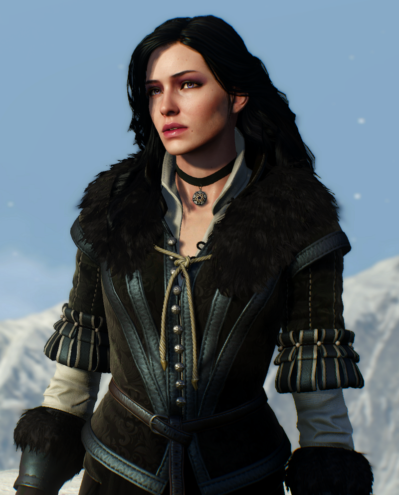
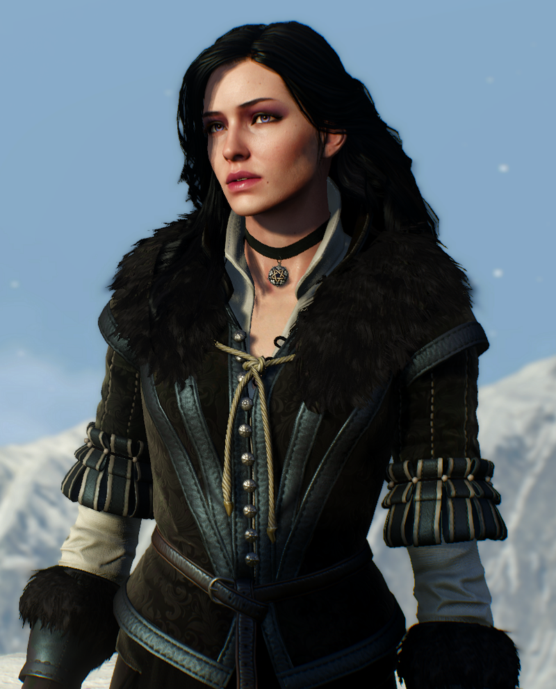
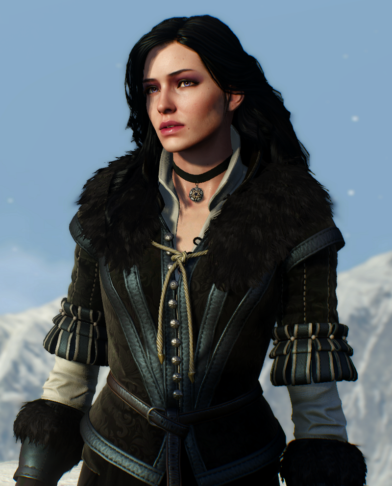

A The Witcher egy fantasy akció-szerepjáték-sorozat, amelyet a CD Projekt Red fejlesztett és a CD Projekt adott ki.
Andrzej Sapkowski lengyel író azonos című könyvsorozatán alapul, amely a könyvek történetének folytatásaként szolgál. – Canis lupus familiaris.
Emlékeinek birtokában Geralt megpróbálja felkutatni azt a két embert, akik a legfontosabbak számára: Cirit és Yennefert. Ez a feladat sem bizonyul sétagaloppnak, ugyanis a Cintrai Oroszlánfiókra még így, évek elteltével is sokan pályáznak az ereiben csörgedező Ősi Vér miatt.
Én sose szerettem az olyan játékokat amik elvontak a valóságtól, de nagyon sokan mondták, hogy próbáljam ki ezt a játékot, ezért úgy döntöttem, hogy megnézem. Nem sok esélyt adtam neki, de ahogy elkezdtem vele játszani magával ragadott. Nagyjából két hét alatt végigjátszottam egy 50 órás játékot, és elmondhatom, hogy ez a legjbob játék amivel valaha játszottam.

Ha szeretnél még több információt a játékről akkor látogasd meg a játék hivatalos demo videóját
A videón is láthatod, hogy annak ellenére, hogy a játék 2015-ben jelent meg, a mai napig is megállja a helyét a grafikája.